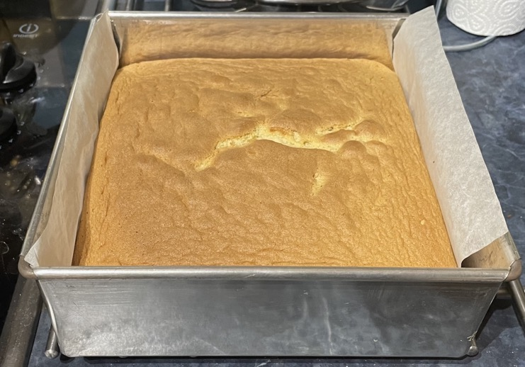
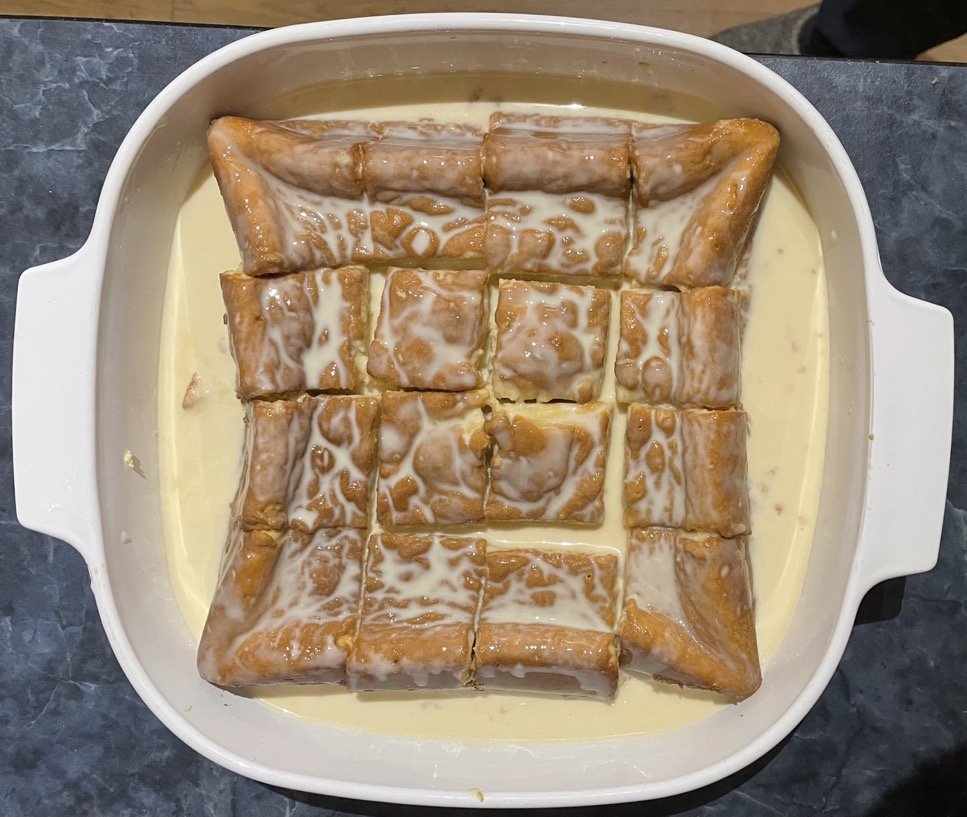
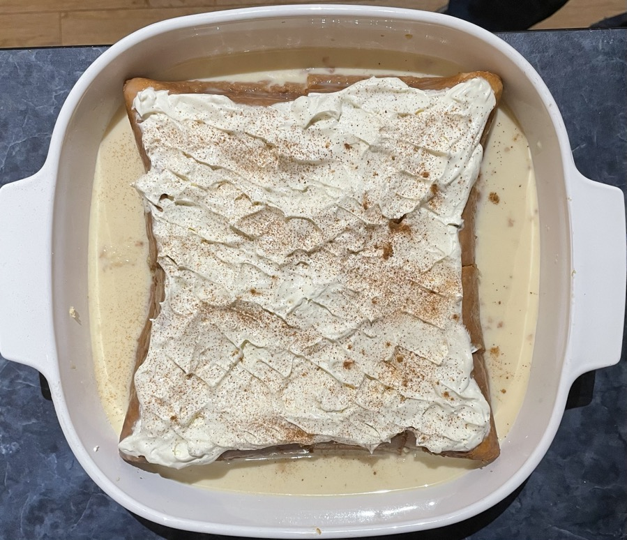
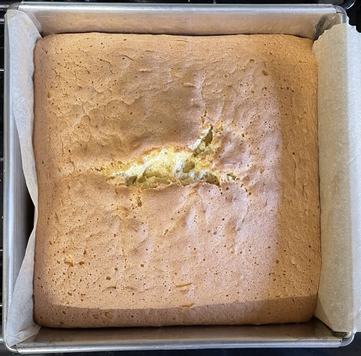
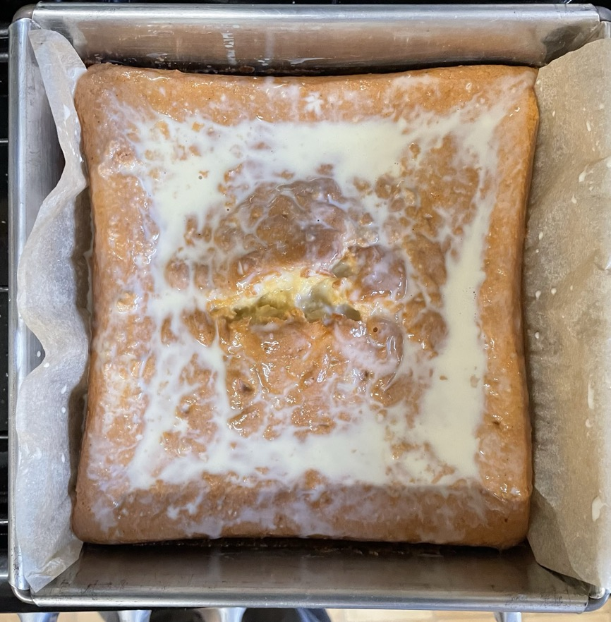
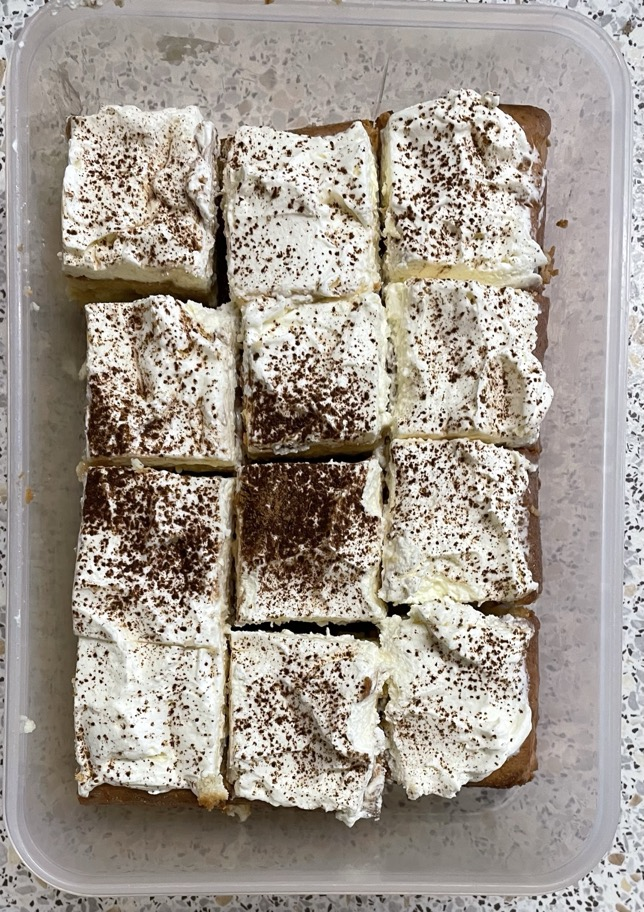

Tres leches cake
- Preheat oven to 170°C the turn down to 160°C when put cake in
- Baking
- 4 large eggs / 5 medium eggs (304g with shells)
- Cooked till 90°C but still some shrinkage, try 93°C for less shrinkage
Egg whites
- Whisk till foamy
- Whisk in one spoonful at a time
Bake
- Mix for 2 mins
- 4 egg yolks
- 50g caster sugar
- 1 tsp vanilla extract
- Mix in
- Sieve in gradually while combining with hand whisk
- 200g self-raising sponge flour
- Add one spoonful of egg white to loosen
- Fold in rest of egg whites
- Pour mixture into 20x20cm cake tin lined with baking paper
- Bake at 160°C for 45 mins till skewer comes out clean or 92°C in centre
Milks
- Mix
- 410g can evapourated milk
- 200ml sweetened condensed milk
- 45ml (45g) double cream
Milk cake
- Leave to cool for 10 mins
- Run knife around sides
- Poke 16 holes in surface with chop stick, one hole in centre of each piece
- Pour over half milk mixture
- Leave for 5 mins
- Transfer to plate
- Remove baking paper from underneath
- Pour over more milk till cake cannot absorb more
- Leave to cool
- Cut into 16
- Pour over rest of milk mixture
- Whisk to soft peaks
- 235ml double cream
- 2 tbsp icing sugar
- Spread cream over cake
- Sprinkle with a little cinnamon
- Transfer to container
Notes
Pics
1st



2nd



Buy
- 300ml double cream
- 410g can evapourated milk
- 200ml sweetened condensed milk
- 4 eggs